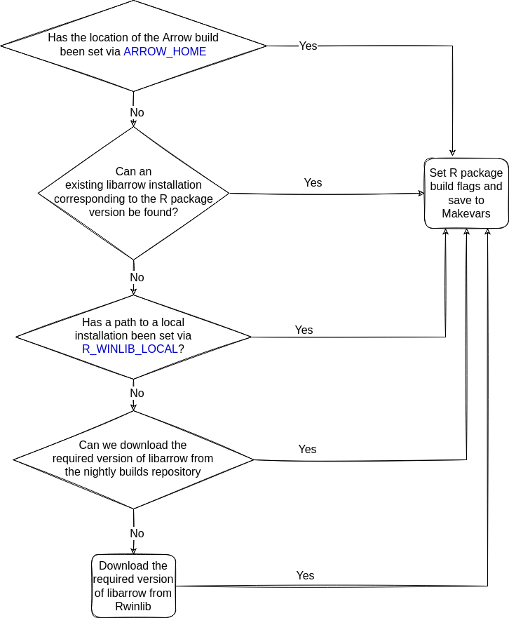
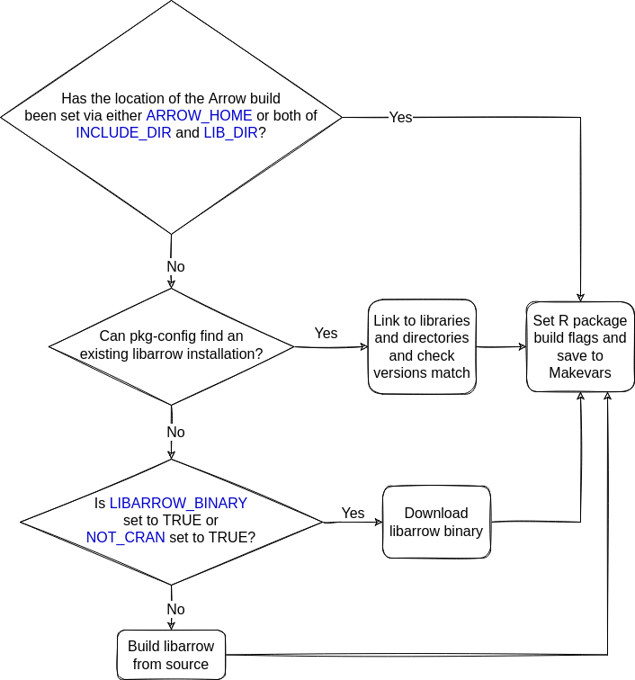

vignettes/developers/install_details.Rmd
install_details.RmdThis document is intended specifically for arrow developers who wish to know more about these scripts. If you are an arrow user looking for help with installing arrow, please see the installation guide
The arrow R package requires that Arrow C++ library (also known as libarrow) to be installed in order to work properly. There are a number of different ways in which libarrow could be installed:
Below, we discuss each of these setups in turn.
There are a number of scripts that are triggered when R CMD INSTALL . is run and for Arrow users, these should all just work without configuration and pull in the most complete pieces (e.g. official binaries that we host). One of the jobs of these scripts is to work out if libarrow is installed, and if not, install it.
An overview of these scripts is shown below:
configure and configure.win - these scripts are triggered during R CMD INSTALL . on non-Windows and Windows platforms, respectively. They handle finding the libarrow, setting up the build variables necessary, and writing the package Makevars file that is used to compile the C++ code in the R package.
tools/nixlibs.R - this script is sometimes called by configure on Linux (or on any non-windows OS with the environment variable FORCE_BUNDLED_BUILD=true) if an existing libarrow installation cannot be found. This sets up the build process for our bundled builds (which is the default on linux) and checks for binaries or downloads libarrow from source depending on dependency availability and build configuration.
tools/winlibs.R - this script is sometimes called by configure.win on Windows when environment variable ARROW_HOME is not set. It looks for an existing libarrow installation, and if it can’t find one downloads an appropriate libarrow binary.
inst/build_arrow_static.sh - called by tools/nixlibs.R when libarrow
needs to be built. It builds libarrow for a bundled, static build, and mirrors the steps described in the “Arrow R Developer Guide” vignette This build script is also what is used to generate our prebuilt binaries.
The actions taken by these scripts to resolve dependencies and install the correct components are described below.
The diagram below shows how the R package finds a libarrow installation on Windows.

When you install the arrow R package on Windows, if the ARROW_HOME environment variable has not been set, the install script looks for an existing libarrow installation. If this cannot be find, it then checks whether the R_WINLIB_LOCAL environment variable has been set to point to a local installation.
If no existing libarrow installations can be found, the script proceeds to try to download the required version of libarrow, first from the nightly builds repository and then from Rwinlib. The script first tries to find a version of libarrow which is matches the most components according to semantic versioning, and in the case of a failure becomes less specific (i.e. if there are no binaries found for version 0.14.1.1, then try to find one for 0.14.1).
The diagram below shows how the R package finds a libarrow installation on non-Windows systems.

More information about these steps can be found below.
When you install the arrow R package on non-Windows systems, if no environment variables relating to the location of an existing libarrow installation have already by set, the installation code will attempt to find libarrow on your system using the pkg-config command.
This will find either installed system packages or libraries you’ve built yourself. In order for install.packages("arrow") to work with these system packages, you’ll need to install them before installing the R package.
If libarrow is not found on the system, the R package installation script will next attempt to download prebuilt libarrow binaries that match your both your local operating system and arrow R package version. The libarrow binaries will only be retrieved if you have set the environment variable LIBARROW_BINARY or NOT_CRAN.
If found, they will be downloaded and bundled when your R package compiles. For a list of supported distributions and versions, see the arrow-r-nightly project.
If no libarrow binary is found, it will attempt to build it locally. First, it will also look to see if you are in a checkout of the apache/arrow git repository and thus have the libarrow source files there. Otherwise, it builds from the source files included in the package. Depending on your system, building libarrow from source may be slow. If libarrow is built from source, inst/build_arrow_static.sh is executed.
If you are authorized to install system packages and you’re installing a CRAN release, you may want to use the official Apache Arrow release packages corresponding to the R package version via software distribution tools such as apt or yum (though there are some drawbacks: see the “Troubleshooting” section in the main installation docs). See the Arrow project installation page to find pre-compiled binary packages for some common Linux distributions, including Debian, Ubuntu, and CentOS.
Generally, we do not recommend this method of working with libarrow with the R package unless you have a specific reason to do so.
This setup is much more common for arrow developers, who may be needing to make changes to both the R package and libarrow source code. See the developer setup docs for more information.